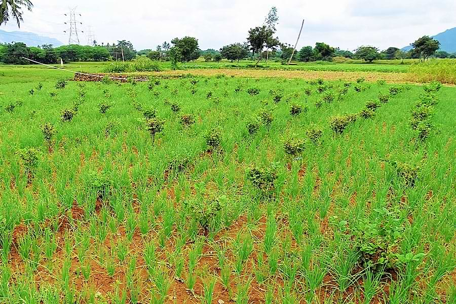

1. Small Onion
| Season | Variety | Yield | Duration | Performance |
|---|---|---|---|---|
| May - June | CO 4 | 11200 | 80 days |
Bulb propagated: Seed rate – 500 kg/0.4 ha. Short duration, cost involvement for seed bulb – 20000 - 25000/0.4 ha |
| Oct - Nov | CO 4 | 14600 | 90 days | |
| May - June | CO(ON) 5 | 13100 | 130 days |
Seed propagated: Seed rate: 1 kg/0.4 ha. High yielding, required nursery managemet, cost involvement for seed alone – 3000/0.4 ha |
| Oct - Nov | CO 5 | 14600 | 130 days |
(Scroll left/right to view full table)
| Treatments |
Seed Yield (kg/ha) |
Gross Cost (Rs/ha) |
Gross Return (Rs/ha) |
Net Return (Rs/ha) |
BCR |
|---|---|---|---|---|---|
|
Farmers practice (Flood Irrigation) |
13,200 | 2.98,000 | 4,16,225 | 1,18,225 | 1.40 |
|
Water saving technology - Laser spray Micro irrigation |
15,500 | 2,23,750 | 4,88,750 | 2,65,000 | 2.18 |
(Scroll left/right to view full table)
2. Small Onion + Jasmine – Intercropping by Small and Marginal Farmer

Variety:
Small Onion - CO-4
Jasmine - Ramanathapuram Gundumalligai
| Particulars |
Small Onion + Jasmine (80:20 cents) |
Onion (1 acre) |
|---|---|---|
| Bulb and Flower Yeild | 4.8 T Onion, 545 Kg Jasmine | 5.2 Tons |
| Gross Cost (Rs.) | 64690 | 47190 |
| Gross Return (Rs.) | 187075 | 96000 |
| Net Return (Rs.) | 122385 | 48810 |
| BCR | 2.9 | 2.3 |
(Scroll left/right to view full table)
ADDITIONAL CROP CULTIVATION
ANNUAL VEGETABLES
A Climate Resilient Practice
A Climate Resilient Practice of Namakkal District
| SN | Crops |
Total Yield (kg) |
Average Sales Price (Rs/kg) |
Gross Cost (Rs/ha) |
Gross Return (Rs/ha) |
Net Return (Rs/ha) |
BCR |
|---|---|---|---|---|---|---|---|
| 1 | Onion | 15,500 | 31 | 2,23,750 | 4,88,750 | 2,65,000 | 2.18 |
| 2 |
Fruit Vegetables - 2 Crops 1. Tomato – 25 Cent 2. Brinjal – 25 Cent |
3000 1200 |
10 40 |
27800 | 78000 | 50200 | 2.8 |
| 3 |
Fruit Vegetables - 3 Crops Tomato - 20 Cent Brinjal - 20 Cent Bhendi - 10 Cent |
2400 940 410 |
10 40 20 |
22600 | 69800 | 47200 | 3.0 |
| 4 |
Leguminous Vegetable + Annual Moringa Lab Lab – 15 Cent Cowpea/Cluster Bean – 10 Cent Moringa – 25 Cent |
480 800 3000 |
40 20 15 |
22100 | 80200 | 58100 | 3.6 |
| 5 |
Cucurbits Bitter Gourd - 20 Cent Snake Gourd - 15 Cent Ribbed Gourd - 15 Cent |
3050 | 30 | 26680 | 91500 | 64820 | 3.4 |
| 6 |
Cucurbits - 40 Cent Tomato - 10 Cent |
2440 1200 |
30 10 |
25300 | 85200 | 59900 | 3.4 |
(Scroll left/right to view full table)